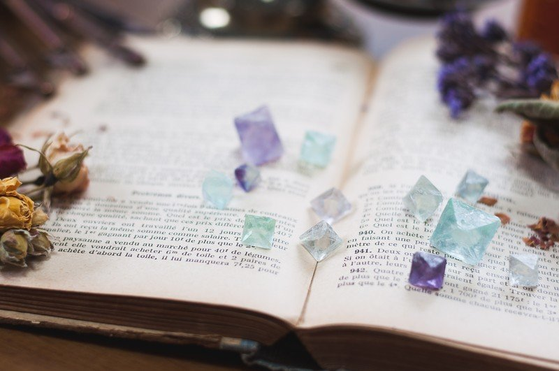

エガオとナミダ。それは決して出会わない者同士。
でも、この世界で二人は幼なじみとして出会いました。それは運命のいたずらか、それとも……。
様々な感情や表情が個々に生きている世界。感情や表情というのは人間でさえも把握していないものも多く、実に数千の者たちがこの世界で暮らしています。
その中でも輝かしい存在感を放つエガオは活発な子で、いつも周りには多くの友達がいました。たくさんのことに興味があり、好奇心を糧に生きているような子です。
対して、幼なじみのナミダは内気な子でした。よく本を読んでおり、路上に咲く花を見ては「大丈夫？」と声をかけるほどの心配性で心優しい子でした。しかし、そうした性格のはずのナミダは今まで涙を流したことがなく、その点だけはナミダ自身も不可思議に感じていました。
「ナミダちゃん、今日は何して遊ぶー！？」
エガオは外に出たがらないナミダをよく遊びに誘っていました。今日もエガオは誰にも頼まれていないのにナミダの住む家の前で大きな声を上げています。
ナミダは窓を開け、エガオに向かって言いました。
「わたし、本を読んでたいの。また今度にして！」
「また本と一緒？ 今日ぐらい遊ぼうよー！」
甘えた声を出すエガオをちらりとナミダは見ましたが、ナミダは何も言わず窓を閉めてしまいました。
「わたしは本の世界にいたいの。お願いだからあっち行っててよ」
そう小さな声でナミダは呟きました。
ナミダは内心、エガオがなんでこうも何度も何度も誘ってくるのか分かりませんでした。エガオにはほかにも多くの友達がいるし、何せよ自分といても楽しくないのに、と。
でもナミダはエガオのことが嫌いではありませんでした。いつも明るくて、嫌味な人にも笑顔で接する姿を見て、尊敬している部分もありました。でも、その感情にはまだ名前がなく、ほんのり淡い気持ちだけがナミダの心を覆っていました。
別の日。
学校に行く途中、ナミダは後ろから駆け寄るシットとネタミに声をかけられました。
「いいわねえ。いつもエガオくんに誘われて。あんた、そんなに魅力的なのかしら」
シットは嫌みたらしく口を尖らせながら言います。
「やだねえ。もしや卑怯な手でも使ったんじゃない？」
ネタミはナミダを睨みつけます。
二人がナミダに突っかかる理由。それはエガオが遊びに誘う女の子がナミダだけだという理由でした。そのことが災いし、エガオを密かに狙う女の子、シットやネタミが毎日意地悪してくるのです。
「だから違うって。エガオくんなんて興味ないし、第一わたしもなんでこうも誘われるのか分からないの。いつも断ってるのに、めげずに毎日誘ってくるし……」
そんなナミダの言葉は不用意にシットやネタミを腹立たせました。
「あんた、何を言ってるか分かる？ 今あんたは意識せずとも自分は人気者から声をかけられる魅力があるって言ってるのよ？」
「いや、そういう意味じゃ……」
そう否定してもシットとネタミは聞こうともしません。
「いつか痛い目に合わせてやるから」
そう宣言し、二人は足早に去っていきました。
今日もナミダに遊びを断られたエガオは残念そうに別の友達のもとへ向かっていました。最近仲良くしているイカリとウタグルです。
「遊ぼ」
ナミダに断られる一部始終を見ていた二人は同情したような顔でエガオを見ています。
「いいぜ。でもお前、いつも振られるくせによくナミダのこと誘うよな。もう関わるなよ、同じことの繰り返しだぞ」
イカリはいつものように強い口調でそう言います。
「そうだよ。もしや、エガオはナミダのことが好きなのかい？」
にやにやするウタグルにそう聞かれ、「ち、ちがうよ」としか言えないエガオの頬は真っ赤に染まっていました。
「おい。知ってるか。ナミダ一族が流す涙には大金になる価値がある。なんせ一雫だけで家を買えるくらいだと」
イカリとウタグルにそんな話を吹き込んだ者がいました。情報屋のポーカーフェイスです。イカリとウタグルは時々ポーカーフェイスのもとへやってきてはお金になる話を仕入れていました。
しかし、ウタグルは未だに信じていません。
「そんなことあるかなあ」
イカリは強い口調でウタグルに言います。
「そんなこと言ったら何も信じられねえじゃねえか！ ことは試しだ！ まずはナミダを捕まえてたんまり泣かしてやろう」
そして二人はナミダの涙を手に入れるために綿密な計画を立てました。
二人の本当の関係はお金をかき集めるためのビジネスパートナーに過ぎないため仲が良いとはいえませんでした。しかし、こうした悪事を働く時だけは最高のコンビネーションを見せる相棒なのでした。
とある日。
ナミダの住む家にやってきたイカリとウタグルは本屋の店員のふりをしてインターフォンを鳴らしました。
「ナミダさん、はじめまして。私たち、この街に新しくできた本屋の店員です。ナミダさんにおすすめの本が入荷されましたのでお届けに参りました」
イカリは慣れた口ぶりで画面越しのナミダに語りかけました。
「本？ わたし、そんなもの頼んでないです」
怪しがるナミダにウタグルはすかさず口を挟みます。
「エガオさんという方がナミダさんにぜひ読んでほしい本をぜひプレゼントしたいとのことでしたので」
「エガオくんが？」
そう言うとナミダは玄関のドアを開けました。入念な変装をしたイカリとウタグルに気づかず、ナミダは二人に近づきます。
「どんな本ですか？」
すると二人はすぐさまナミダの手を引き、準備していた車の中へとナミダを担ぎこみました。
「何するの……！」
「おとなしくしていた方が身のためだぜ」
ナミダは口を塞がれ、抵抗することもできぬまま車に乗せられてしまいました。
そんなことが起きているとはつゆ知らず、今日もエガオはナミダを誘いにやってきました。
「ナミダちゃん、今日こそあーそーぼ！」
そう呼びかけても返事がありません。今まで誘いが断られることはあっても、無視されたことは一度もありませんでした。エガオは不思議がり、ナミダのいる家のドアに手をかけるとカギがかかっていないことに気がつきました。
「あれ？ ナミダちゃんいないの？」
エガオはますます不思議に思いました。ほとんど外出しないナミダが家にいないなんて珍しいな、と。
部屋を見回していると、エガオは机の上に本と一雫の液体があることを見つけました。その液体は燦燦とした輝きを放っていました。
本のタイトルは「泣けるエピソード集」と書いてあります。そんな本のタイトルには目もくれず、エガオはその雫の美しさにすっかり見惚れていました。
「きれい……」
エガオがこんなに美しい液体を見たのは初めてでした。透明で輝きを放つ雫。その透き通った雫にエガオは顔を近づけました。するとその中にはナミダの姿がありました。
「ナミダちゃん！？」
エガオは大きな声で叫びました。どうやらそこにはイカリとウタグルが鞭やらナイフやら物騒なものを持っています。エガオはすぐにただごとじゃない事態を悟りました。
エガオは慌てふためきながらも、その雫に映る場所がどこか必死に考えました。うす暗い空間に鬱蒼とした木々。エガオはその場所に心当たりがありました。
そこは一度、二人に連れられた彼らの秘密基地でした。その瞬間、エガオは持てるだけの速さでその場所へと走り出しました。
ちょうどその頃。
両手を縛られ身動きの取れないナミダを前にイカリとウタグルは鋭い目つきでナミダを睨みつけていました。
ナミダには彼らの目的は何なのか分かりませんでした。そして、ナミダは自分の命がなくなることすら覚悟をしていました。
「さすがの俺も女に手を上げるほど最低な野郎じゃねえ。だから、ここから先はこいつらに頼んである」
すると、見慣れたシルエットをした二人がナミダに近づいてきます。
「ナミダちゃーん！ 元気にしてたー？」
キャピキャピした声の方向を見ると、そこにはシットとネタミがいました。すると二人はナミダに近づいてきます。
「前まであんたには価値なんかないと思ってたけど、まさか金になる才能があったなんてね」
妙に威勢のいいシットがそう言うと、ネタミも続きます。
「早く旅行とかエステとか行きたいから早くえーんえーんって泣いてねー？」
その言葉を聞いて、ナミダはようやく目的を知ることになりました。彼らの目的は自分の涙であることを。その瞬間、さっきまで必死に泣こうと努力していた自分がみじめに思えたのでした。
そして、ナミダは彼らにどんな酷いことをされても涙だけは流さまいと誓ったのでした。
「さて。じゃあ後は頼んだぞ」
「泣いたらすぐ知らせるよーに！」
そう言って、イカリとウタグルはどこかに行ってしまいました。イカリとウタグルがいなくなると、シットとネタミは彼らの悪口を始めました。
「あいつらバカだよねえ。わたしたちがあいつらの半分の取り分だけで満足すると思ってるんだから」
「そうそう。こいつをたんまり泣かして、さっさとお金に換えてこの街から出ましょ」
シットとネタミがそんなことを言った後、目つきが変わったように二人はナミダに向かって暴言を吐き始めました。
「あんたなんか、その涙が金になること以外に存在価値ないからね。人付き合いも悪い、話さない、つまらないの3拍子が揃ってる」
「そもそもあんた、みんなになんて呼ばれてるか知ってる？ 根暗、死神、くちなし女だよ」
「こんなに嫌われてちゃ、誰もあんたに近づかなくなるの当たり前だよねえ」
その後も二人は暴言を吐き続けましたが、ナミダは心を頑なに崩そうとしませんでした。別にみんなにどう思われようがいい。周りは周り、自分は自分だと。
一向に涙を流さない姿を見て、しびれを切らしたネタミはついに嘘を言い始めました。
「そうそう。唯一あんたに声をかけてたエガオくんもあんたを何度も誘っているのに、あんたがそんなだからもう声かけないって言ってたよ。残念だったねえ」
ナミダの表情がハッとしました。ナミダは自分も分からないほど鼓動が早まり始めたことに気づきました。
そんな表情を見て、ネタミは絶好の機会だと思って続けます。
「それとエガオくん、もう別の子が好きになったんだって」
そう言ってネタミはシットを見ます。シットは「ほんとに？」という顔をしてネタミの顔を見ます。ネタミは若干の罪悪感はあったものの、シットにウインクをしました。
「あらら。あんたがうだうだ言い訳して、エガオくんからの好意を無駄にしちゃったから。これであんたの周りには誰もいないねえ！」
ナミダの表情はどんどん追い詰められていきました。呼吸は荒くなり、小さく震えていました。
「エガオくん、なんで。なんでこんな子のこと。確かにわたしなんかは不釣り合いだけど、でもなんでよりによってこんな子を」
ナミダはそう小さく呟きます。ナミダはとても悲しい気持ちになっていました。ナミダの心に渦巻く風はやがて台風になり、ナミダの気持ちまでも飲み込もうとしていました。ナミダの目元には涙がたまり、それがこぼれ落ちそうになっていました。
涙が流れるのは時間の問題だと確信した二人はアイコンタクトをします。
「さて、あんたにはもっともっと泣いてもらうからね。こんなもんじゃないんだから」
そう意気揚々とネタミが宣言した瞬間、大きな声が響き渡りました。
「随分な嘘を言うね、君たちは」
その声にハッとした二人の視線の先には息を切らしたエガオが立っていました。
「な、なんでここが……！？」
エガオは一呼吸置いて二人をまっすぐ見ました。
「ナミダちゃんが知らせてくれたんだ。ナミダちゃんの涙は確かにお金になる。でも実はそれだけじゃない。その涙はナミダちゃんの心を映す鏡なんだ」
シットとネタミはそれを聞いて笑い出しました。
「なによそれ」
「バカみたい」
「バカはそっちだろ！」
エガオは珍しく怒っていました。いつだって笑顔のエガオからは想像できない表情でした。
「僕は君たちみたいなのが一番嫌いさ。心の底から」
その言葉は二人の心を突き刺しました。やがて二人はうずくまってしまいました。
「イカリとウタグルも僕のよりよい友人たちの協力で捕まったって連絡があった。それと二人にナミダちゃんの情報を流したポーカーフェイスも友人たちが捕まえに向かってる。すでに時間の問題だろう。やはり持つべきものは友だね」
シットとネタミは無表情のまま動きませんでした。
「君たちもいい友人を持つんだ。そのためにもまずは自分を好きになれる部分を作っておくべきだと思うよ」
そういってエガオは彼女らの前を通り過ぎました。
エガオとナミダ。二人はようやく再会しました。
「やっと会えたね」
エガオはナミダのもとへ駆け寄って言いました。ナミダの両手を縛っていた鎖を壊すと、ナミダはエガオに抱きつきました。
エガオは思わぬナミダの行動に顔が真っ赤になりました。そして二人は見つめ合いました。
「あっ！ ナミダちゃん笑ってる！」
「エガオくんこそ泣いてるよ」
ナミダはエガオの涙を優しく手で拭きながら言いました。
「ねえ。ナミダちゃん。今度こそあそぼ。僕もこれから一緒に本読むからさ」
「でも、わたしといても楽しくないよ」
ナミダは俯き加減で呟きます。
「これまで楽しいこといっぱいあったけど、こんなに嬉しく感じたこと初めてなんだ。全部ナミダちゃんのおかげだよ」
ナミダはまっすぐエガオを見ました。
そして、ナミダは決意したように言いました。
「うん。わたし、エガオくんといたい。ずっと」
ナミダは一筋の涙を流しました。その涙はとても美しく、誰の心にも溶け込んでしまうほどでした。
「あれ……悲しい本を読んで泣こうとしてもほとんど泣けなかったのに」
エガオは微笑みながらナミダの耳元でささやきました。
「涙は流そうとして流すものじゃない。泣きたい時に流すものだよ」
そうして二人はまた見つめ合いました。
その時、二人は初めて同じ表情をしていました。すれ違っていた二人の感情はようやく一つになったのです。嬉し泣きという名のもとに。
エガオとナミダはやがて一緒に暮らし始めました。
これからも様々な困難や問題が二人の前に立ち塞がることでしょう。でも二人は確かな感情のもとにこれからも強く生きていくことになります。
そう。ナミダに暮れる夜を越えて、エガオの日々を迎えるために。